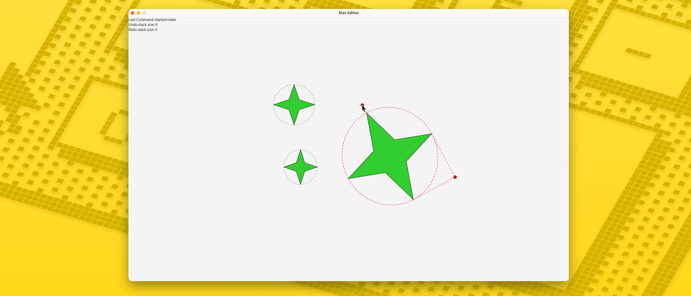
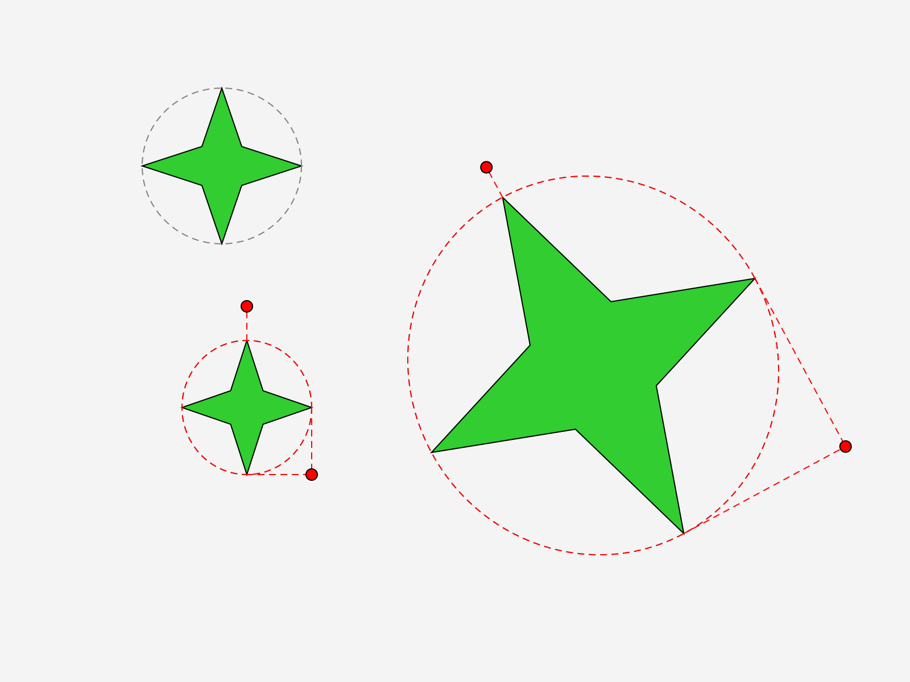
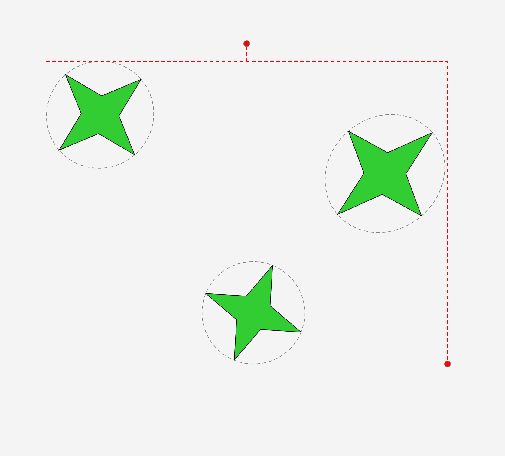
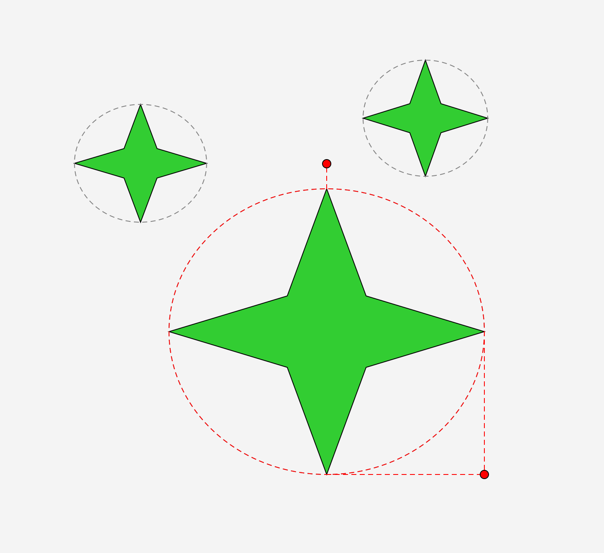
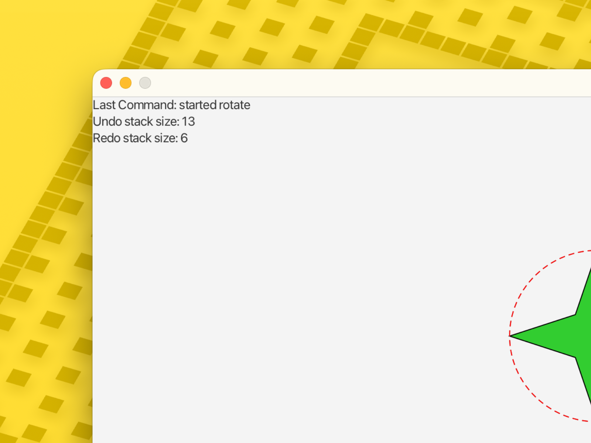

Interactive Creation, Handles, Multi-Select, Grouping, and Undo/Redo
Interactive Star Editor

Interactive Creation, Handles, Multi-Select, Grouping, and Undo/Redo
This project is an interactive star editor built with JavaFX, where users can draw stars by clicking and dragging, then move, resize, and rotate them using on-screen handles (kind of like dragging and resizing icons or windows on a computer desktop). Users can select multiple stars at once (similar to selecting several files with Control-click), group them together so they act as one unit, and ungroup them again, with everything keeping its position and rotation correctly. The app also supports undo and redo, so any action, like creating, moving, resizing, or grouping, can be reversed or replayed with a keypress, just like Ctrl+Z in most everyday apps. Behind the scenes, the project uses a full Model-View-Controller (MVC) structure to separate the data, the drawing, and the user interactions, along with transform-based graphics to handle positioning and rotation, and a command-based system to make undo/redo possible.




